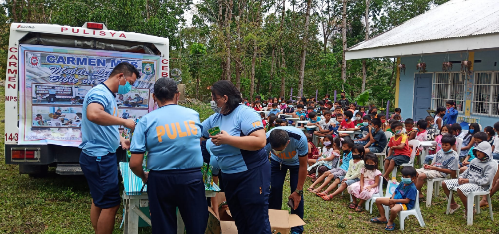
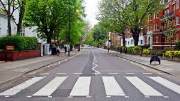

Key Public Safety Projects
The Vice Mayor has worked closely with local police, fire departments, and emergency responders to improve safety and security in Cebu City.
- Modernized Fire and Rescue Services
- Community Policing
- Emergency Response Systems
- Security Cameras and Surveillance
- Safe Public Spaces
Upgrading fire stations and equipping firefighters with the latest firefighting technology, including drones for aerial surveillance during fires.

Strengthening the relationship between law enforcement and the community by establishing community-based safety programs, including neighborhood watch groups and public safety awareness campaigns.

Introducing an integrated disaster response system that connects emergency services, hospitals, and local government units through a centralized platform for quicker coordination and resource distribution.

Installing CCTV cameras in high traffic areas such as public markets, parks, and transport terminals to monitor criminal activities and deter unlawful behavior.

Creating safer public spaces through better street lighting, anti-crime design principles, and improved pedestrian facilities, making the city more walkable and secure.

Collaboration with National Agencies
In partnership with national agencies, Vice Mayor Garcia has pushed for the enhancement of local disaster risk management programs, ensuring that Cebu City is better prepared to handle natural and man-made disasters.
Future Initiatives
Looking ahead, Vice Mayor Garcia aims to:
- Implement a comprehensive city-wide disaster preparedness program, ensuring that every community has a clear evacuation plan.
- Introduce "Safe Haven" centers for vulnerable populations during natural disasters and emergencies.
- Expand the use of technology in law enforcement through AI-based predictive policing to identify and address crime hotspots.